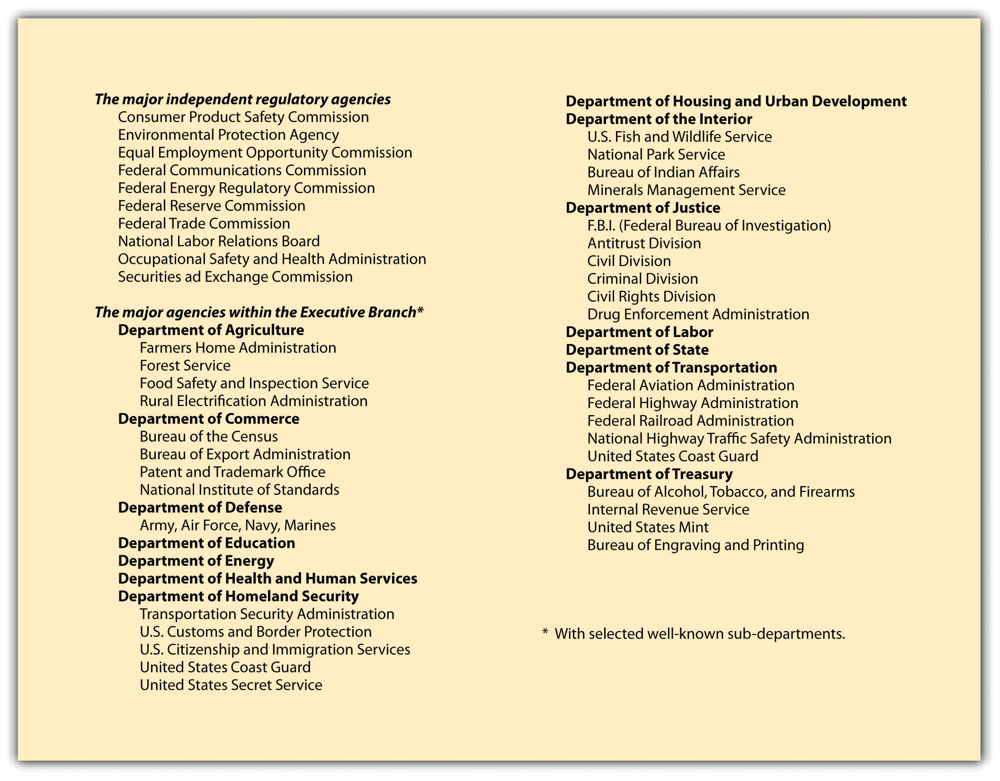

During the course of the past seventy years, a substantial debate has been conducted, often in shrill terms, about the legitimacy of administrative lawmaking. One criticism is that agencies are “captured” by the industry they are directed to regulate. Another is that they overregulate, stifling individual initiative and the ability to compete. During the 1960s and 1970s, a massive outpouring of federal law created many new agencies and greatly strengthened the hands of existing ones. In the late 1970s during the Carter administration, Congress began to deregulate American society, and deregulation increased under the Reagan administration. But the accounting frauds of WorldCom, Enron, and others led to the Sarbanes-Oxley Act of 2002, and the financial meltdown of 2008 has led to reregulation of the financial sector. It remains to be seen whether the Deepwater Horizon oil blowout of 2010 will lead to more environmental regulations or a rethinking on how to make agencies more effective regulators.
Administrative agencies are the focal point of controversy because they are policy-making bodies, incorporating facets of legislative, executive, and judicial power in a hybrid form that fits uneasily at best in the framework of American government (see Figure 5.1 "Major Administrative Agencies of the United States"). They are necessarily at the center of tugging and hauling by the legislature, the executive branch, and the judiciary, each of which has different means of exercising political control over them. In early 1990, for example, the Bush administration approved a Food and Drug Administration regulation that limited disease-prevention claims by food packagers, reversing a position by the Reagan administration in 1987 permitting such claims.
Figure 5.1 Major Administrative Agencies of the United States
Congress can always pass a law repealing a regulation that an agency promulgates. Because this is a time-consuming process that runs counter to the reason for creating administrative bodies, it happens rarely. Another approach to controlling agencies is to reduce or threaten to reduce their appropriations. By retaining ultimate control of the purse strings, Congress can exercise considerable informal control over regulatory policy.
The president (or a governor, for state agencies) can exercise considerable control over agencies that are part of his cabinet departments and that are not statutorily defined as independent. Federal agencies, moreover, are subject to the fiscal scrutiny of the Office of Management and Budget (OMB), subject to the direct control of the president. Agencies are not permitted to go directly to Congress for increases in budget; these requests must be submitted through the OMB, giving the president indirect leverage over the continuation of administrators’ programs and policies.
Administrative agencies are creatures of law and like everyone else must obey the law. The courts have jurisdiction to hear claims that the agencies have overstepped their legal authority or have acted in some unlawful manner.
Courts are unlikely to overturn administrative actions, believing in general that the agencies are better situated to judge their own jurisdiction and are experts in rulemaking for those matters delegated to them by Congress. Some agency activities are not reviewable, for a number of reasons. However, after a business (or some other interested party) has exhausted all administrative remedies, it may seek judicial review of a final agency decision. The reviewing court is often asked to strike down or modify agency actions on several possible bases (see Section 5.5.2 "Strategies for Obtaining Judicial Review" on “Strategies for Obtaining Judicial Review”).
Administrative agencies are given unusual powers: to legislate, investigate, and adjudicate. But these powers are limited by executive and legislative controls and by judicial review.